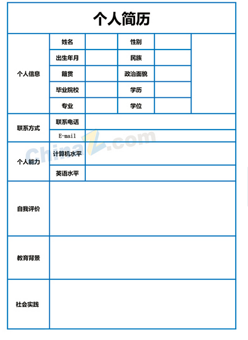

行内元素的宽度和高度是内容的宽度和高度，
行内元素的宽度和高度是内容的宽度和高度，不能直接设置宽高 行内元素是不可以设置padding和margin，左右的时候起作用，上下不起作用 img,input可以直接设置宽度和高度 padding和margin都是四个方向都起作用 img在首页编辑时，请规定好图片的width和height，以免图片过大，影响页面效果 
行内元素转化为块级元素 block 反之 inline